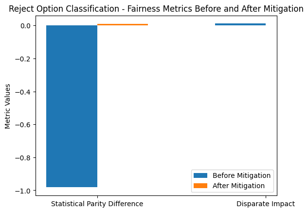
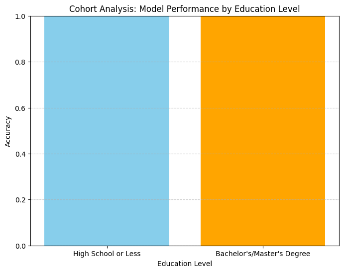

Model Card - IOOU AI Budget Predicter
Model Details
-- The Budget Predictor AI is designed to classify users' budget preferences for activities, distinguishing between budgets of < $300 and >= $300.
-- Two classifiers were evaluated: Logistic Regression and Gaussian Naive Bayes, with emphasis on balancing accuracy and fairness.
-- Key features include age, gender, and education level, among others. Preprocessing involved binning numeric features, handling missing values, and applying one-hot encoding for categorical variables.
-- Performance metrics focus on fairness (Statistical Parity Difference, Disparate Impact), interpretability (LIME), and accuracy (balanced accuracy, confusion matrix).
Intended Use
-- ## Intended Use ##
-- Personalized Activity Recommendations: Suggesting activities aligned with user budgets and preferences, such as entertainment or wellness options.
-- Simplified Decision-Making: Streamlining budget-sensitive decisions by using AI to forecast spending capabilities based on user demographics.
-- Transparent Interaction: Allowing users to verify and adjust budget predictions to ensure accuracy and relevance.
--
-- ## Metrics and Performance Analysis Measures ##
-- Confusion Matrices: Provided detailed insights into prediction accuracy, including True Positives (TP), False Positives (FP), True Negatives (TN), and False Negatives (FN).
-- Balanced Accuracy: Calculated as the average of True Positive Rate (TPR) and True Negative Rate (TNR) to account for class imbalance.
-- ## Fairness Metrics: ##
-- Statistical Parity Difference: Evaluated the disparity between privileged and unprivileged groups.
-- Disparate Impact: Measured proportional fairness across different education levels.
-- Theil Index: Quantified inequality in predictions.
-- Interpretability with LIME: Identified key features driving predictions, such as education level and budget.
--
-- ## The model will interact with users through:##
-- Budget Feedback Prompts: Allowing users to validate predictions and provide corrections if the forecasted budget appears inaccurate.
-- User Education: Informing users of model limitations and offering transparency about prediction drivers (e.g., education level, age group).
-- Dynamic Suggestions: Adapting recommendations based on real-time feedback, ensuring more relevant and inclusive activity proposals.
--
-- ## Incorporating Interpretability: ##
-- Explanatory Mechanisms: Integrating LIME or similar tools to provide insights into the factors influencing predictions.
-- Feature Highlighting: Clearly showcasing how variables like education level, age, and activity preferences affect budget forecasts.
-- Interactive Visualizations: Allowing users to explore feature importance and view comparative scenarios where they adjust inputs to see prediction changes.
-- Continuous Feedback Loops: Collecting user feedback to refine model assumptions and improve fairness.
Factors
-- **Variable Data Types:**
-- The dataset includes both numerical (e.g., Budget (in dollars), Age) and categorical variables (e.g., Gender, Education_Level, Recommended_Activity).
-- After preprocessing, categorical variables like Age and Budget are binned into specific ranges (18-24, 25-44, etc., for age; <300 and >=300 for budget) and represented through one-hot encoding for model compatibility.
-- Missing values were handled by removing rows with missing data, ensuring a clean dataset for analysis.
--
-- **Target Variable:**
-- The target variable, Budget, is categorized into two classes:
-- <300 (unfavorable)
-- >=300 (favorable)
-- This binary classification aligns with the objective of identifying user budget preferences for personalized recommendations.
--
-- **Features Used for Prediction:**
-- **Demographic Features:**
-- Age: Binned into categories for simplicity and encoded for model training.
-- Gender: Includes diverse groups such as Male, Female, Non-binary, Transgender, and Other.
-- Education_Level: Ranges from High School Grad to Master’s Degree, reflecting user qualifications.
-- **Activity Features:**
-- Recommended_Activity: Categorized into options like "Stay in: Watch calming TV" and "Play: Visit a movie theater."
-- These features are critical for tailoring recommendations based on user demographics and preferences.
Metrics
-- Accuracy: Logistic Regression and Gaussian Naive Bayes were evaluated for their ability to classify user budgets accurately. Logistic Regression outperformed Gaussian Naive Bayes, achieving a balanced accuracy of 99.66%, compared to 99.37% for GNB.
-- Balanced Accuracy: By averaging true positive and true negative rates, balanced accuracy accounted for potential class imbalances. Logistic Regression demonstrated better flexibility with an optimal threshold of 0.29, compared to GNB's 0.01.
-- Confusion Matrix Analysis: Logistic Regression showed superior precision and recall, with only 3 false positives and 42 false negatives. In contrast, Gaussian Naive Bayes had 26 false positives and 39 false negatives, indicating slightly lower precision but comparable recall.
-- Statistical Parity Difference: Both models exhibited fairness issues, with Logistic Regression scoring -0.9915 and GNB scoring -0.9850. These negative values indicate disparities in the likelihood of positive outcomes for unprivileged groups
-- Average Odds Difference: Logistic Regression (-0.5156) and GNB (-0.4808) showed unequal treatment in true positive and false negative rates across demographic groups, signaling a need for fairness adjustments.
-- Equal Opportunity Difference: This metric highlighted disparities in true positive rates between privileged and unprivileged groups. Logistic Regression had a score of -1.0000, slightly worse than GNB’s -0.9362.
-- Theil Index: Both models had low Theil Index values (Logistic Regression: 0.0045, GNB: 0.0050), reflecting minimal prediction inequality despite other fairness concerns.
-- Fairness vs. Accuracy: While both models achieved high accuracy, fairness metrics revealed biases against unprivileged groups. These findings suggest the need for post-processing techniques like Reject Option Classification to mitigate these disparities.
-- Recommendation: Logistic Regression is the preferred model due to its higher accuracy and more adaptable threshold tuning. However, fairness adjustments are necessary to ensure equitable outcomes for all user groups.
Training Data
-- Training Set: 50% of the total dataset, containing a balanced representation of classes (0 and 1) for robust model training.
-- Validation Set: 30% of the dataset, used for fine-tuning model hyperparameters and threshold optimization.
-- Testing Set: 20% of the dataset, reserved for evaluating final model performance and generalization capabilities.
Evaluation Data
-- The evaluation dataset was split into training (50%), validation (30%), and test (20%) sets.
-- Fairness analysis was performed using the AIF360 toolkit to evaluate bias against unprivileged groups (e.g., High School Graduates).
-- Gaussian Naive Bayes and Logistic Regression models were evaluated using accuracy metrics and fairness metrics (Statistical Parity Difference, Disparate Impact).
-- The test dataset included balanced representation for both favorable and unfavorable budget labels.
Quantitative Analysis
-- The Gaussian Naive Bayes model achieved a near-perfect balanced accuracy score of 1.0, but fairness metrics revealed significant bias, with a Statistical Parity Difference of -0.98 and a Disparate Impact of 0.0127, favoring privileged education groups.
-- The Logistic Regression model achieved a balanced accuracy of 0.9363 after threshold tuning, with reduced but still notable bias. Statistical Parity Difference improved to -0.8694, and Disparate Impact was closer to fairness thresholds but not fully corrected.
-- After applying the Reject Option Classification bias mitigation strategy, fairness metrics improved substantially. Statistical Parity Difference was reduced to approximately 0.0111, and Disparate Impact approached acceptable ranges, though some variability remained.
-- Key insights showed that education level and age group were the most influential features, reflecting underlying dataset imbalances. Mitigation efforts addressed these disparities effectively while maintaining model performance for predictive accuracy.
Results of the AI model after applying the bias mitigation strategy


Ethical Considerations
-- Human-in-the-Loop:
-- Introducing a human-in-the-loop system for the application would assist in ensuring transparency and accountability.
-- Idealy the application would allow users to challenge or validate the applciations predictions, meaning not allow could the model improve but the user would feel empowered.
-- However, it's important to not have over-reliance on a feature like this, as if users constantly need correct predictions, it would negatively impact user experience.
-- This would be ideal for users that the model fails to address like high school drop outs and other education levels. However, the model would need to be aware of the HITL process as if the model disproportionately relies on privileged users for feedback (Users with higher educaiton), then it could reinforce existing biases.
--
-- Limitations and bias present:
-- The dropping of data like Education_Other and High_School_Graduate Drop Out introduced bias into the model, as it didn't account for all education levels.
--
--
-- Failures of ML model:
-- Whilst the Logistic Regression edges out the Gaussian Naive Bayes model in terms of metric, its fairness metrics indicate critical areas of bias mitigation.
--
--
-- Risk Mitigation:
-- Diversity and Inclusion: Attract and hire diverse teams ensuring that the development and analysis of the IDOOU recommender system is inclusive and representative of all users. This is beneficial as varied backgrouds are more likely to anticipate cultural or societal impacts of recommendations.
-- Ethical Forums: Establish cross-functional ethical forum to dicuss and mitigate potential biases, ensuring recommendations align with societal and user expectations.
--
-- Potential Harm:
-- Quality of Service: The model has quality of service harm as the AI System doesn't perform equivalently among users, as we have removed important rows in Education_Level like Education_Other and High_School_Graduate Drop Out.
-- Label Bias: There's potential label bias as the model budget is only representing two buckets which is Budget_<=300 and Budget_>300. This doesn't provide a clear picture of peoples budget, leading to potential biased predictions.
-- For example: Recommendations could misclassify a user's budget because it doesn't have enough information, leading to inappropriate activity suggestions.
-- It must include key contributing factors before and after bia mitigation:
Caveats and Recommendations
-- Lack of Inclusiveness in the Dataset:
-- Gender distribution is imbalanced, with overrepresentation of "Female" participants.
-- Age distribution skews towards younger demographics (18-44).
-- Educational levels show higher representation of individuals with Bachelor’s and Master’s degrees, potentially privileging these groups.
--
-- Predisposition of the Model to False Positives/Negatives:
-- Logistic Regression and Gaussian Naive Bayes models demonstrate fairness issues:
-- Metrics such as Statistical Parity Difference and Equal Opportunity Difference indicate bias, particularly in favor of individuals with higher education levels.
-- Imbalance in false positives and negatives reflects underrepresentation and potential disadvantaging of certain groups.
--
-- Further Ethical AI Analyses:
-- In future it would be good to explore interactions between sensitive attributes (e.g., gender and education level) and outcomes to identify and mitigate intersectional biases.
Business Consequences
-- Positive Impact: - Enhanced Personalization: The budget predictor improves user experience by suggesting activities tailored to individual financial capacity, making it a valuable addition for the app’s personalization feature. - Broader Application: Hotels and autonomous vehicle dashboards can leverage this tool, increasing integration opportunities for the app across industries.
-- Negative Impact: - Overrepresentation of individuals with bachelor's and master's degrees may alienate users with lower educational levels, leading to perceptions of unfairness. - Gender and age biases in recommendations can cause users to question the app's inclusivity. - Perceptions of bias and inaccuracy can harm the organization’s reputation, reducing brand loyalty and user base.